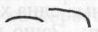
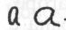
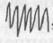
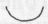
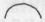

Беседа 3780 от 3877 · Беинса Дуно
Факти, закони, принципи / Мисли, чувства, постъпки и пеене
Отче наш
В начало бе Словото
Мога да кажа
На Земята на човека му е потребно знание. Имате ключа “сол”, това е знак, цигуларите го имат. Ако не знаеш къде да го туриш, няма да знаеш как да наредиш нотите. То е цигулен ключ. Цигулният ключ го наричам женски ключ. Басовият ключ е мъжки ключ. Цигулният ключ е динамичен, пълен с електричество. Басът е мъжки – магнетичен. Как ще разберете какво е женски ключ? Представете си, че това е врата, които са много деликатно направени, с деликатни ключалки, а имате друга врата, голяма, с голям ключ. Някой път може да си пукнеш главата в нея. Коя е била причината, за да пишат нотите на петолиние, над която и под която има спомагателни линии. В Природата този ключ го има. Животът има цигулен ключ, аз го наричам органически ключ. Има психологичен ключ, има и ключ на душата, има и ключ на духа. Има ключ на човешкия ум, има ключ на човешкото сърдце. Сърдцето се отваря, умът се отваря, душата се отваря, нямаш този ключ, нямаш основа, откъдето да започнеш. Започнатата работа е потик. Всякога потиците идат отгоре.
Ако теглите една линия, ако теглите една успоредна линия на Земята, която да минава през вашата зеница, може напълно да определите характера на човека какъв е. Ако погледът на човека е насочен под тази линия надолу към земята, той естествено е материалист. Мисли само за земята, за ниви, за някой камък, за дрехи, за шапки. Всички тия работи са свързани с материалния свят. Гледа някоя шапка, гледа някоя книга, но съдържанието не е хубаво, но подвързията е много хубава и той иска да я има като украшение. Може да е по психология, може да е по анатомия, хубава книга. Аз имах един познат американец, д-р Кори, посещавах го, ходех му на гости. Той имаше повече от 20 цигулки, старинни цигулки и за всяка се интересуваше да си дам мнението. Онзи, който ги е правил, не е бил голям майстор. Дойдох до убеждение, че с една стара цигулка, много мъчно се свири. Хубави са, имат възможности, но с една стара цигулка трябва дълго време да свириш. Много своенравни са старите цигулки. Нещо има хубаво, но е скрито. Дърветата, от които са направени цигулките в една епоха, се различават от цигулките, които сега се правят. Заблужденията, които тогава са имали, са вложени в растителното царство. И най-първо като вземеш една цигулка, трябва да я освободиш от всичките заблуждения на тогавашния век, защото заблужденията спъват музикалните тонове, не могат да излизат правилно. Вие може да питате: “Как става това нещо?” Ти казваш: “Виждам червения цвят”. Как го виждаш? Къде е този червен цвят? Една призма разлага слънчевия лъч – имаш червен цвят; махни призмата – няма го. Казваш: “Червен цвят”. Как ще го докажеш, че е червен? И другият човек трябва да има същите схващания, по същия начин да схваща трептенията, за да разбере. Има хора, които не виждат червения цвят. Има хора, които не могат да видят правилно ясносиния цвят. Много красив е червеният цвят, цветът на живота. Този червен цвят, който представят тук, има един недоимък. Червеният цвят като го видиш в Природата, веднага се образува едно трептение под лъжичката, приятно ти е. Усещаш една малка, микроскопическа топлина, усещаш едно разположение. При червения цвят веднага ставаш активен, устните се свиват. При червения цвят човек има весело изражение. Този, червеният цвят е внесъл в трептенията на твоята мисъл друго нещо. Вие трябва да се интересувате от Природата. Сутрин като станете, погледнете хоризонта, вижте как изгрява Слънцето, нюанси има. Художниците как рисуват тези картини. Сутрин музика има, има едно малко шумолене на листата. Онзи, който не е музикален, казва: “Шум”. Един българин ми разправяше как научил английски. “В началото – казва – като слушах, английският език беше една неразбрана работа, едно и също нещо ми се струваше: хау ху, хау ху, като че ли са слети всичките думи. След като седях 6 месеца в Америка, слушах английски език, тия думи започнаха да придобиват по голямо пространство и започнах да разбирам, че между хау ху, има нещо. Английският език изпъкна в мен като светлина и думите започнаха да се нареждат като на англичанин. Аз можех да произнеса “Good day”, “Good morning”, “How do you do”. Всичките неща в Природата са смесени. Казваш: “Какъв живот има. Няма никакъв смисъл – шумоли”. Интересно е туй дърво, което ти го считаш, че не е интелигентно, че няма съзнание, ще направи един плод, който е много хубав, не може никой да го направи. После ще го нашари така хубаво, че никой така не може да го направи. Представете си, че тия дървета са ангели. Една идея ще ви дам. Представете си, че тия ангели са слезли отгоре, да опитат живота и са станали на дървета. Ти казваш: “Това дърво е голям будала”, а то е един ангел, който те изпитва. То е 10 пъти по-умен от тебе, а ти казваш – то е будала, то е дърво. Как трябва да се гледа? Когато не разбираме хората, те са дървета с главата надолу. Когато речем да ги разберем – са животни, а когато ги разбираме – са човеци. Що е човек? Когато разбираш едно дърво, то не е дърво, то е човек. Човека като не го разбираш, то е дърво. Хората казват: “Той е дърво”. Щом не го разбираш, е дърво. Дърво е произлязло от “дева”. От дева ние имаме: ден, дева, дава. Знаете ли от о-то колко думи са излезли? Онези думи, които са излезли от о-то, показват крайния предел. Той е периферията на един център. Те показват до какъв предел може да идеш. Тия думи, които са излезли от о-то, показват от центъра до периферията докъде може да идеш. Има думи, които показват крайния предел. Има думи, които са произлезли от а-то и означават съдържанието, натоварени думи са. Казваш: “Много добър си”. Тази дума има съдържание. Казваш: “Много си невежа”. Обиди се човекът. Кажеш: “Много добър човек си”. Доволен е човекът, натоварил се е. Кажеш му: “Прост си” и в един, и в другия случай товариш. Като кажеш: “Много добър човек си”, този човек е натоварен със злато. Като кажеш: “Голям невежа си, простак си”, натоварен е с кал. Представете си, че имате едно знание, което е от кал. Имате едно знание, което е от злато. С кое ще прекарате по-добре? Със златото. Вашата чиста мисъл и желания, това са материя. Мислите съдържат материя, чувствата съдържат материя и силата съдържа материя. Но тия три качества материя се различават. Мисловата материя, чувствената материя и материята на движението, от която силата се проявява, се различават. Силовата материя е доста гъста. След нея идва материята на чувствата и най-рядка е материята на човешката мисъл. Ако вие не впрегнете ума си на работа, как ще впрегнеш един човек на работа? Казвате: “Впрегнете го на работа”. Човека никога не може да го впрегнеш на работа. Работата винаги започва с впрягане. И мисълта не може да я впрегнеш. Казваш: “Заставете го!” Влиза насилието. Този човек доброволно не мисли, искаш да го заставиш да мисли. Как ще го заставиш? Един благородник имал много приятели. Когато идвал някой в дома му, той седял повече, отколкото той иска и за да не го обиди, и той седи и чака да си иде. Всеки ден седял дълго време. За да се освободи от тях, на столовете турил по една игла, свързана с един конец. Като се заседи някой от приятелите му, той дръпне конеца, бодне го, след като го бодне 3-4 пъти, казва: “Занят съм, бързам да си ида”. Тук вече има една хитрина. Доста умен бил. После пита приятеля си: “Защо не седяхте?” Казва: “Не зная, имаше нещо на стола”. Ние седим и целият наш живот е свързан с такива игли. Доста игли туряме в столовете си. Първото нещо, всичките хора трябва да се хармонират. Мислите се трансформират, от един човек в друг минават. Срещнеш един човек, без да ти говори нещо, той е проводник. Някой човек още като те погледне, и предметът става ясен. А някой друг като те погледне още, и предметът става тъмен. Някой човек, като те срещне, дава потик на работата си. Някой като те срещне, отказва се от работата. Ние в съвременния живот по изкуствен начин търсим. Един ученик свърши отделенията, свърши прогимназията, гимназията, свърши университета и ние мислим, че той е свършил и е подготвен за живота. Но сегашната система трябва да върви към естествения ред на нещата. Въпрос е кога трябва да се учи химия, кога трябва да се учи физика, кога трябва да се учи ботаника, зоология. Тия предмети трябва да се учат според степента на съзнанието. Детето трябва да учи това, което го интересува. Нещата в Природата вървят постепенно, като стълба, не са разхвърляни.
Запример в музиката, ако искаш да станеш пъргав, подвижен, пей сопран. Ако искаш да станеш тежък, пей бас. Казват: “Тежест има в характера”. Тенорът е крайният предел на баса, гдето може да стигне. Басът на тенор не може да иде. Тенорът е развитие на баса, подигна[т] нагоре. Алтът е, докъдето сопранът може да слезе. Тенорът показва докъде басът може да се качи. Тенорът и алтът са спомагателни средства, деца на музиката са. Дъщеря и син. Един ден тенорът ще стане баща. Алтът е, който слиза надолу. И сопранът слиза надолу. Басът се качва нагоре. Музикантите нямат тази идея. Движението на сопрана е надолу. А движението на баса е нагоре. Движението на тенора е нагоре, движението на алта е надолу. В човека има четири способности, които трябва да се характеризират. Имаш да даваш. Някои хора само наблюдават. Видиш някой човек и казваш: “Харесва ми се”. Този човек е факт. Казваш: “Харесва ми този човек”. Кое харесваш на човека, не знаеш. Казваш: “Харесвам очите”, но кое харесваш в очите, не знаеш, кое харесваш във веждите, не знаеш. Има нещо във веждите, което харесваш. Може да харесваш. Може да имате едни вежди извити     
По някой път вие седите и не си харесвате окото. Защо не го харесвате? Първоначалната форма, както е направено окото, формата му е точно определена, определена е колко трябва да е голяма зеницата. Определени са тия кръгове вътре в окото, колко трябва да бъдат големи. Ако тия кръгове са по-големи, отколкото трябва или по-малки отколкото трябва, в чувствата на човека се произвежда недоволство. Като гледаш не си доволен, понеже са малки очите. Малки са очите, малка светлина приемаш. При големите очи, силата на очите не седи в големината им. Човек никога не може да направи една къща, както Природата е направила. Ние искаме големи апартаменти, големи палати направени. Природата е направила една къща дълга 21-22 см, широка 14, 15, 16, 17 см и висока 15-16 см и като влезе философът вътре, работи. В тази, малката къща Природата е турила 3 билиона и 600 милиона клетки да живеят. Те се спогаждат в главата. Там е разпределен труда. Природата е направила окото толкоз малко, че всичките прозорци не може да възприемат толкоз светлина както окото. Окото събира светлината. Като погледнеш, пред тебе се отваря цял свят. Каква грамадна светлина влиза, трансформира се в мозъка. Туй място, гдето се трансформира слънчевата енергия, е много малко място. Сега седим и не сме доволни, че нямаме големи стаи. Как си доволен в главата? Следователно научете се да бъдете доволни от малкото и да цените голямото. Щом не разбираш малкото, не може да разбереш и голямото. Като станеш сутрин, тури си ръката на челото да мислиш. Постави си ръката, понеже двете ръце са проводници на ток. Лявата ръка е проводник на отрицателната сила, дясната ръка – на положителната. Едната ръка е плюс, другата е минус. В човешката глава лявото полушарие е плюс, а дясното полушарие е минус. Дясната ръка е плюс, а лявата е минус. Лявата страна на мозъка на главата е плюс, а лявата ръка е минус – от отрицателната енергия на мозъка. От лявото полушарие, силите минават в дясната ръка и от дясното полушарие минават в лявата ръка, прекръстосват се. Силите минават от дясното полушарие покрай очите в другата страна на тялото. Очите показват слизането на движението, по което вървят силите. Когато туй движение е правилно, човек има едно устройство; когато туй движение е било неравно, безразборно, несиметрично, не може да го определиш – не виждаш никаква интелигентност. Някой път някои считате идеалисти. Къде е интелигентният поглед на човека? Кога нещо те интересува като факт? Една ябълка ме интересува като факт, това засяга долната част на мозъка. Интересува ме цвета, с който е направена ябълката. Това става със средната част на челото. Отрежеш ябълката и най-после усещаш сладчината ў, с това се занимава горната част на челото. Сладчината е философски въпрос. И горчивината е философски въпрос. Съдържанието е литературна част. А красотата на ябълката, с това се занимава долната част на челото. Сладчината се познава с горната част на челото. Милосърдието е сладчина. Лошият човек е горчивина. Горчиво и сладко, това са полюси. Те имат приложение във физическия живот. Често трябва да минат ред поколения, за да видим че не сме работили добре. Ти си бил много немарлив. Краката са станали много дебели и не може да ходиш. Краката са къси с дебели пръсти и не може да ходиш. Пръстите тънки трябва да станат. За да станат тънки, трябва да имаш друга мисъл. За да проточиш краката си, трябва да станеш материалист, трябва да влезеш да живееш между хората. Ако искаш да станеш идеалист, живей сам, стани калугер. Най-първо религиозните хора се индивидуализират и искат само с Бога да живеят. Тази идея е неразбрана. Една мома иска да живее само със своя възлюблен. Ако само те си гугуцат през цялата вечност, какво ще придобият? Че е хубаво, е хубаво, но то е временно, временен акт. Ако искаш да придадеш един сантиметър на своя ръст, може да идеш да живееш между хората. Да направя едно сравнение, какво значи да живееш между хората. Представете си, аз съм певец. Певците как живеят? Певците се раждат. Певецът, той не е станал сега, той е роден певец. Той носи своето пение, диплом има, завършил е училището сега и сега понеже не знае езика, не може да пее. Та казвам: дружете с тия, родените певци, от тях може да приемете. От всеки певец може да приема по едно качество, което в дадения случай го няма в мене. Ако дружа с тия певци, ще стана добър певец, а ако остана сам, ще мисля, че може да пея.
Трябва да влезем в голямото разнообразие. В голямото разнообразие Бог се проявява. Чрез всичките певци Бог се проявява. Чрез всичките философи Бог се проявява. Чрез всичките обикновени хора Бог се проявява. Обикновени хора считаме тия, които живеят за себе си. Простият човек казва: “Господ направил света, Той да го управлява. Аз се занимавам с моята работа, не искам да се занимавам с работата на Господа”. Той има нива, интересува го нивата. Казва: “Не ме интересува онзи свят”. Човек, когото не интересува нищо, какъв го считате? Някой се интересува от богатите хора. Какви са съображенията, коя е побудителната причина? После се интересува щедри ли са те. В Англия живеел един богат човек, който минавал за много скържав. Ако той види ненужно да се изразходва една кибритена клечка, ще дига шум, трепери за една кибритена клечка. Има някакво парче книга, пази я. Отива една комисия от 12 англичанки при него и той им дава 100 английски лири. Те очаквали повече. Отива една млада певица при него и тя отива за благотворителност, нищо не му казва, вижда, че той обича музика и му пее. Той изважда и дава 500 лири. Младата мома дава нещо и взема нещо. Онези отиват да вземат само от него. Той казва: “На онези, които само вземат, давам 100, а онези, които дават и вземат, давам 500”. Ние държим положителното – не искаме да бъдем носители на Божественото?! Ти отиваш при Бога, трябва да дадеш нещо от себе си. Тревожиш се за нищо и никакво. Недоволен си, казваш: “Как днес нямаше повече”. Но ти благодари, не искай да има повече. Ти имаш 100 метра, казваш: “Как да нямаше 200”. Облечеш една дреха, благодари за дрехата. Веднъж като вземеш, благодари на туй, което имаш. Ако намериш кусур на дрехата, ще ти причини неприятност. Не е ушита добре дрехата, ти не си доволен. Казваш на шивача, че те стяга дрехата. Той казва: “Ще се уреди”. От туй притеснение заболява те рамото. Ти мислиш, че дрехата не е направена хубава, има дефект. Когато някой ти шие дреха, хубаво да е ушита. Когато правят обуща, хубаво да са направени. Ако е направено нещо, да е хубаво направено. Не мислете, че отпосле нещата ще станат добри. Когато говориш, говори най-хубаво. Ти казваш: “Аз не искам да напълня неговата глава”. Ти неговата глава няма да напълниш, своята глава ще напълниш. Законът навсякъде е един и същ. Ако един професор, който предава музика, не преподава хубаво, той след време ще загуби. Ако един ученик, който отива в училище да учи, не учи със сърдце и той ще изгуби. Когато ученикът приема нещата естествено и когато учителят преподава, и за учителя е добре и за ученика е добре. Щом учителят не предава добре и щом ученикът не приема добре, и за учителя не е добре и за ученика не е добре. Учителят като не предава добре, за него е зле. И ученикът като не приема добре, за него е зле. Станете сутрин и мислите да се оправи България, оставете това. Днес бъди благодарен на това, което Господ ти е дал. Ако ти не си благодарен на това, не си българин. Ако не знаеш добре да свириш, не си българин. Ако не знаеш добре да говориш, не си българин. Ако не знаеш добре да мислиш, не си българин. Ако не знаеш добре да чувстваш, не си българин. Ако не знаеш добре да постъпваш, не си българин. Това е българин. Българин го взимам като благ човек.
Радвайте се в Природата на фактите. Дърветата това са факти, плодовете това са факти, радвайте се на тия факти. Законите това са методи, почвата, която имаш, върху която тия растения растат. Светлината, топлината, влагата, това са външни условия, които спомагат и организират фактите. Ако тази светлина отгоре не слиза и ако топлината не слиза, и ако влагата не иде, тогава фактите не може да се явят. Зад законите седи разумната Природа. Що е закон? Един закон е метод, чрез който едно разумно същество се проявява. Що е факт? Факт е, чрез което туй същество се изявява. Що е факт? Най-слабото изявление на едно разумно същество, то е факт. Може да е на върха на една игла, но ти ще почувстваш, приятно ти е туй същество. Случи се, не става работата тъй, както вие мислите. Кога е по-добре, да станат нещата тъй, както искаме или да не станат? Най-първо нещата трябва да станат тъй, както Бог ги е направил, после ангелите както са ги пренесли и най-после да станат, както хората искат. Ако искаме нещата да станат, както ние искаме, туй са факти. Ангелите са закони. Бог е Разумната Причина. Ангелите са закони, ограничават и казват: “Няма да правиш това”. Ти си като един факт, не знаеш как да ядеш тази ябълка. На тебе като факт няма да ти дадат втора. Що е факт? Да знаеш да изядеш ябълката. Един ангел, като ядеш ябълката, вижда законно ли я ядеш, дали държиш ума си в светло състояние, приятно, че ядеш тази ябълка, дъвчеш добре. Ти си изпълнил този закон. Те виждат, че вие оценявате и втория път ще ви дадат по-хубава. Ако не си ял добре, втория път няма да ти дадат по-хубава. Сега както мислите, както чувствате и както постъпвате, това са факти. Чувствата образуват законите, постъпките са фактите, а мислите образуват Причинния свят. По някой път вие направите аналогия. Твоите постъпки това са факти. Те се складирват в долната част на челото. Законите са в средната част на челото, а умът е в горната част на челото. Челото трябва да расте на широчина и на височина. Широчина и височина трябва да има. Сега като ме слушате, ред поколения са живели без туй знание, безразборно. Всички в миналото са живели неразумно. Привеждам този пример в една беседа: един българин ходил да изучава градинарство 3-4 години. Казва: “Тази работа е трудна, пришки излизат на ръцете”. Тръгнал да намери по-лесен занаят, това било в Солун. Вижда един абаджия и си казва: “Ето един лесен занаят. Ще прекарваш само иглата”. Отива при абаджията и му казва: “Приемаш ли ме за чирак”. Цяла седмица трябвало да се учи само да боде с иглата. Идва един турски бей и иска абаджията да му ушие един бирбочуклия гащи, да му направи едни гащи от сукно. Чорбаджията му казва: “Вземи аршина и ножиците и аз ще дойда след малко. Тъй се случило, че абаджията закъснял. Беят гледа чирака, доста левент момък на 19 години. Беят му казва: “И ти си майстор, и ти може да ми скроиш бирбочуклии”. Момъкът не казва, че не знае и той му донесъл едни топ със сукно и казва: “На, скрой ми”. Той кроил, кроил бирбочуклия и беят му казва: “То не мяза на бирбочуклия, но поне ми скрой една салтамарка”. После му казва: “А бе чоджум, това не става, но една тютюнева кесия, ако не може да ми скроиш, ще те набия. Бирбочуклия не можа да скроиш, салтамарка не може да скроиш, тютюнева кесия ако не скроиш, ще те набия”. Тютюневата кесия това са фактите, салтамарката това са законите, а бирбочуклията това са принципите. Работата става ясна. Поставени сме в света и едно предметно учение имаме. Изгревът на Слънцето, изгревът на звездите, с всички тия положения Природата иска да събуди спящите сили и човек да започне да мисли. Тя не бърза, постепенно, с хиляди години подканя. Ние отколко малко се отегчаваме и едва сега сме събудени. Сега е ден. Като си млад, не може да учиш. Децата, като слизат отгоре, са сопран. Възрастните са бас. Децата, които отгоре слизат, кряскат. Казват: “Горе всичко е уредено”. Казвате: “Как ще уредим?” Посейте една череша и като стане на 3 години, ще ражда. Всяка сутрин ходете да пеете на черешата и вижте какви плодове ще даде. Посейте и друга череша, на която не пейте. И вижте каква разлика ще има от плодовете на онази, на която пеете. Всякога да пеем на себе си. Когато мислим правилно, е пеене. Да чувстваш правилно, е пеене. Да постъпваш правилно, е пеене. Разглеждам ги като музикални неща. Човек в ума трябва да бъде музикален, в сърдцето си трябва да бъде музикален и във физическия свят да бъде музикален. Всяко движение да бъде музикално, хармонично, съразмерно. Тогава ще добием един характер. Ще бъдем разположени, ще бъдем весели. Няма да бъдем песимисти. Много мъчно е човек да бъде весел. Казваш: “Лоши времена са”. Зад тия лошите времена е Господ. Ние се намираме в положението, в което се намирал един разбойник, който обрал един светия и се скрил в една пещера. До вратата на пещерата застава една кобра и като рече да излезе навън и да вземе имането, тя си дигне главата. Той пак се отказва. Като рече да бяга без имането, нищо му не прави. Щом понесе имането, тя иска да го клъвне. Тя казва: “Без багаж е позволено да излезеш, но с багаж ще те клъвна”. Трябва да освободим ума си, сърдцето си, душата си от всички неестествени подбуди, никаква лъжа и никакъв багаж да няма. Всички неща, които имаш, да бъдат необходими. Необходимо е туй, което обичаш. Туй, което не обичаш, то не е необходимо.
Мислете добре за Първата Причина, то е Принципът. Чувствайте добре, това са законите, и наблюдавайте нещата, това са фактите. Фактите създават силата, чувствата създават законите, а мислите създават принципите.
Това е Живот Вечен, да позная Тебе Единаго, Истиннаго Бога и Христа, Когото си изпратил
46-та лекция от Учителя, държана на 11.VIII.1943 г. сряда 5 ч. с., Изгрев